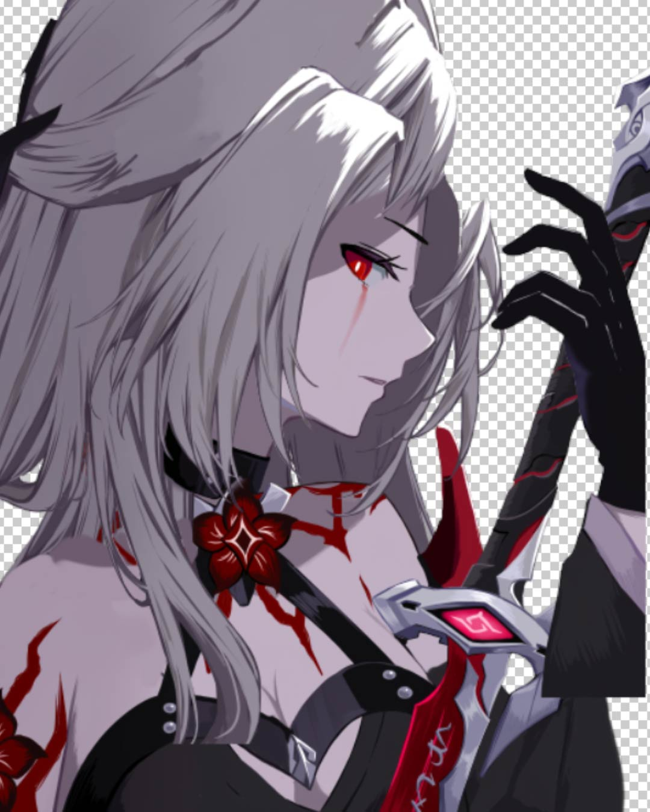
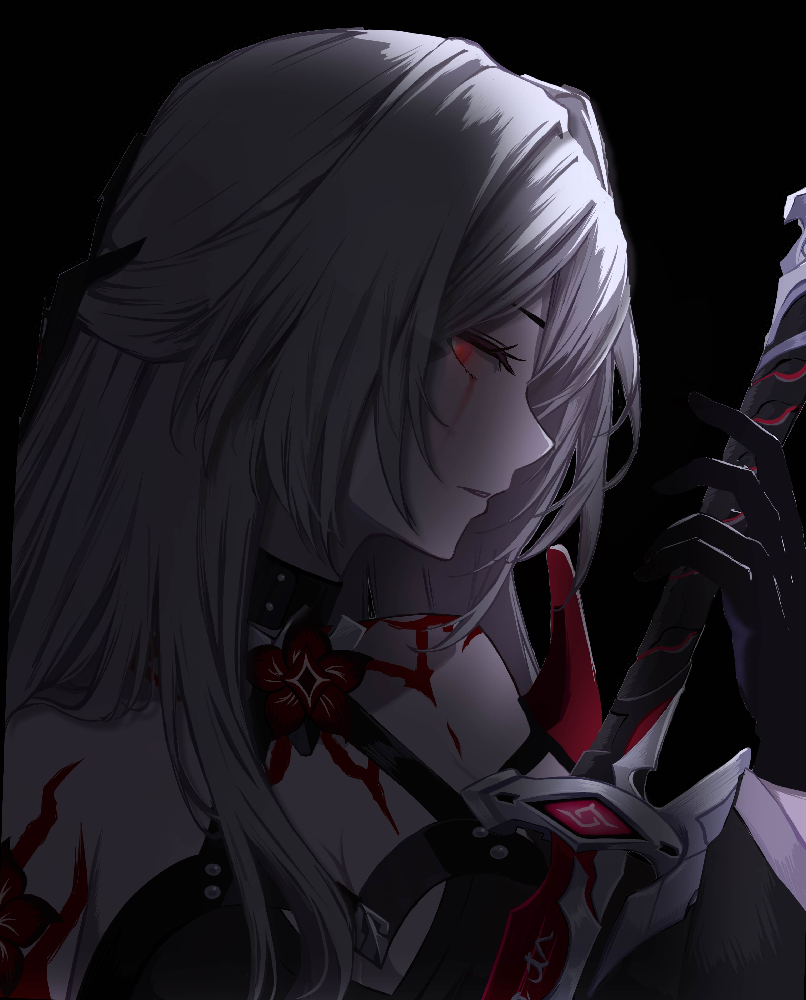

Animation 2D
Projets impliquant de l'animation 2D
Kino
Rôle : Animateur 2D
Logiciel(s) Utilisé: After Effects
Projet "Kino" réalisé dans le cadre d'un examen d'animation 2D en 3 heures. Nous avions 3 heures pour créer 6 cases, chacune ayant un thème différent et celles-ci doivent boucler à l'infini.
Nunca
Rôle : Animateur 2D
Logiciel(s) Utilisé: After Effects


Processus d'animation et de compositing
Petit projet pour pratiquer l'animation 2D sur des dessins/illustrations. Ce projet inclus des techniques d'animations keyframes, du compositing, correction de couleurs etc.